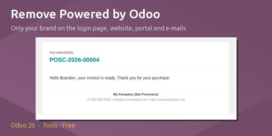
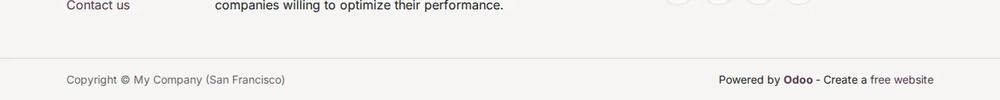
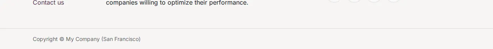
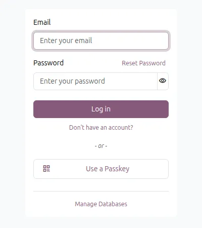
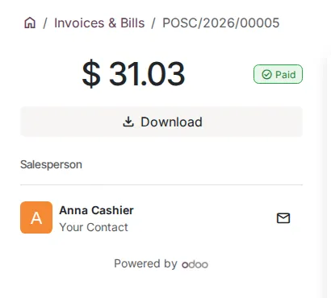
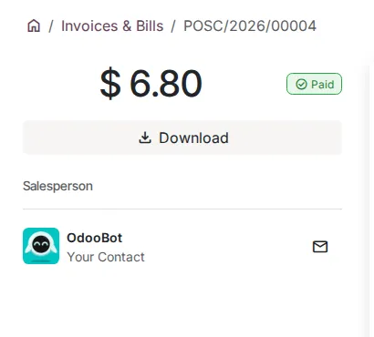
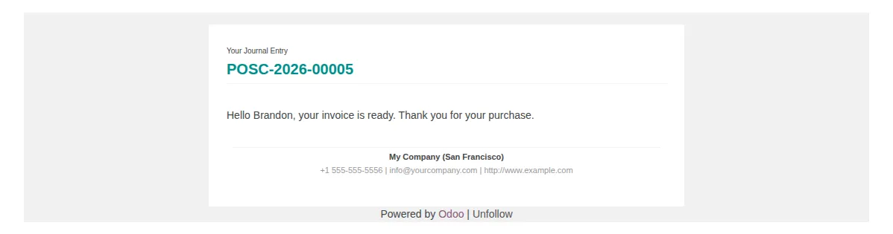

Remove Powered by Odoo - Login, Website, Portal and Emails
Remove "Powered by Odoo" from the login page, the website and portal footer, the customer portal sidebar and every e-mail Odoo sends. Install and done.
- Price
- Free
- Odoo versions
- 16.0
- 17.0
- 18.0
- 19.0
- 20.0
- Technical name
tamadoo_remove_powered_by- License
- LGPL-3

Text and screenshots below are from the Odoo 20.0 version of this module.
Your customers see your brand only. Install it and the "Powered by Odoo" line is gone.
What it does
Removes the "Powered by Odoo" text and link from:
- The login page (
/web/login), with or without the Website app. - The website footer: every page of the website, shop, blog, forms and customer portal ("Powered by Odoo - Create a free website").
- The portal document sidebar: quotations, sales orders, invoices and other documents your customers open online.
- E-mails: the footer of the notification layouts (quotations, orders, invoices and chatter messages). The Unfollow link stays where Odoo shows it.
No settings and no code to maintain: it only adjusts Odoo's own templates. Uninstall it and the original texts come back.
How to use
1. Install the module
Apps, search Remove Powered by Odoo, Activate. That is all.
2. Login page and website footer
Before:

After:

Without the Website app, the login card only keeps your own links:

3. Customer portal documents
Before and after, on an invoice opened from the portal:


4. E-mails to your customers
Before:

After:
Requirements
- Odoo 20 Community or Enterprise — depends only on
portal(installed with Website, Sales, Invoicing...). - Not covered: the Point of Sale receipt and customer display, the attendance kiosk, live chat and the periodic digest e-mail.
Related apps
- WhatsApp Quotation and Invoice - Send via WhatsApp: send quotations and invoices to your customers on WhatsApp in one click.
- Brand Filter for Website Shop - Product Brand: let shoppers filter your online shop by brand.
- Telegram Integration - Telegram Bot and Notifications: Odoo notifications and messages on Telegram.
Tamadoo · tama.odoo@gmail.com
Get Remove Powered by Odoo
Questions before buying? Write to tama.odoo@gmail.com.